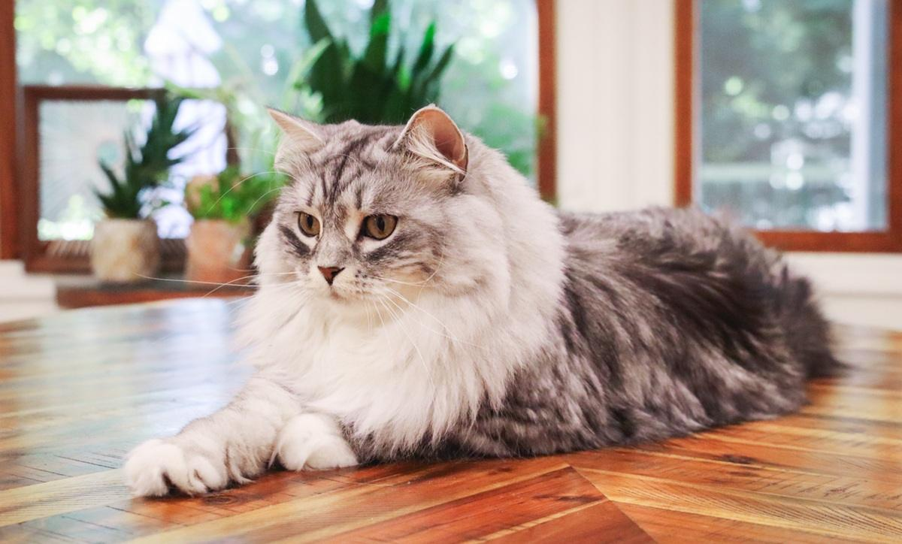
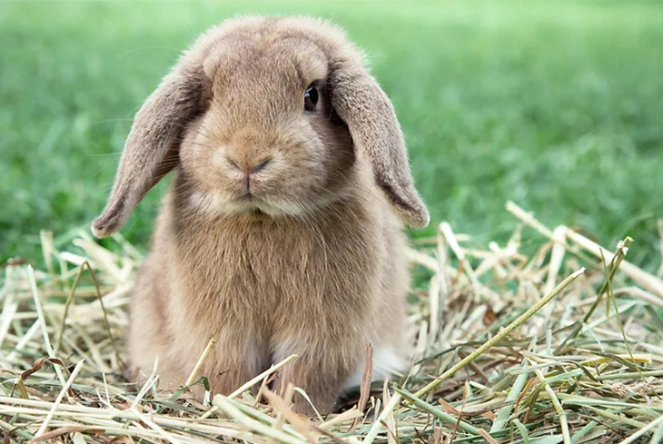
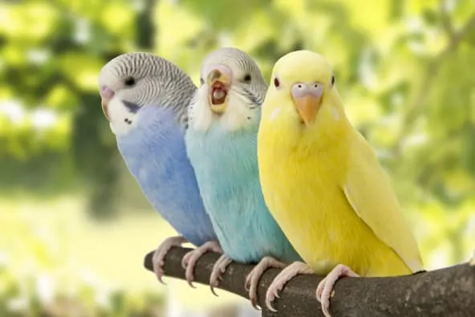

🐶Dogs and puppies
🐾Woof Woof🐾
From wagging tails to warm cuddles, dogs have a special way of making every moment happier.
Dogs are excellent pets that are easy to take care of.
Basic care:
- Provide nutritious food
- Exercise regularly
- Maintain hygiene
- Visit the veterinarian
- Give them affection
- Lots and lots of belly rubs
🐱Cats and kitties

Meow!
Cats are adorable, curious, and independent animals that make wonderful companions. With their playful personalities, soft fur, and gentle purrs, they bring warmth and happiness into our homes.
Basic care:
- Provide nutritious food
- Encourage exercise
- Maintain hygiene
- Visit the veterinarian
- Give them affection
🐰Rabbts and bunnies

Rabbits are gentle, playful, and curious animals that make lovely pets. With their soft fur, long ears, and adorable hopping, they bring joy and charm to any home. They are social animals that enjoy companionship and a comfortable environment.
Basic care:
- Provide nutritious food
- Fresh drinking water
- Allow exercise
- Maintain hygiene
- Groom regularly
- Visit the veterinarian
- Give them affection
Birds

Birds are beautiful and fascinating animals known for their colourful feathers and cheerful songs. They make lovely companions with their playful nature and charming personalities.